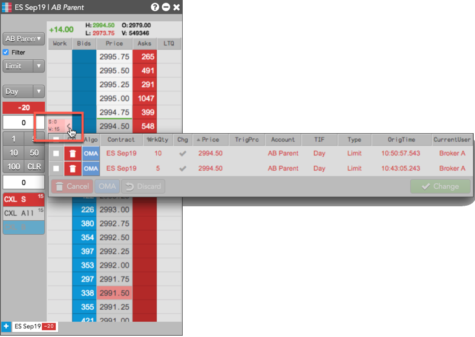
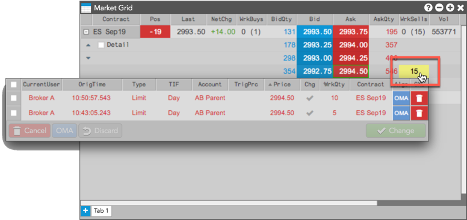
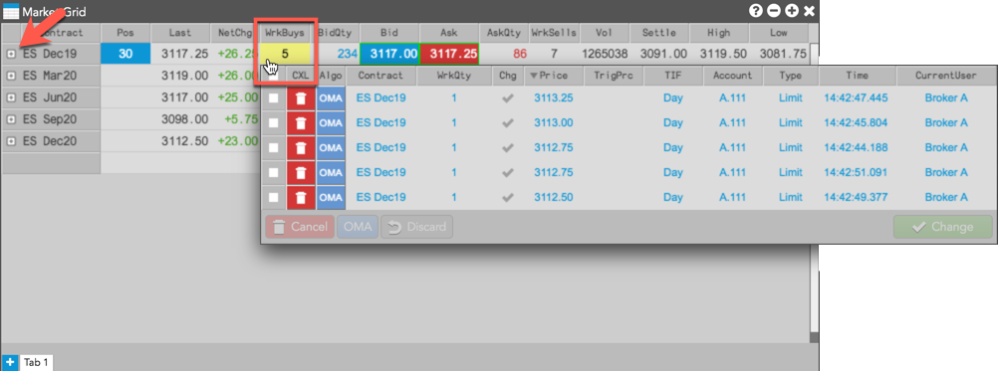
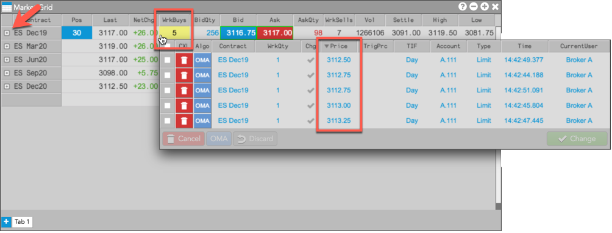

To launch a Floating Order Book, middle-click a working order cell in MD Trader®.
Note: Your Floating Order Book launch preference is set using the Edit | Preferences | Orders |Launch floating order book using option in your workspace preferences.

You can launch a Floating Order Book for your working orders at any price level by clicking the WrkBuys or WrkSells quantity.

If a collapsed instrument has working orders at multiple price levels for an instrument, you can launch a Floating Order Book by clicking the WrkBuys or WrkSells quantity. The Floating Order Book shows orders at all price levels for the instrument, as shown.

You can set the Floating Order Book to sort orders based on how near they are to the inside market using the Sort price column by distance to inside market setting in Preferences | Orders. For example, if a collapsed instrument has working Buy orders at multiple price levels, the orders are sorted low-to-high in the Price column when this setting is enabled.
